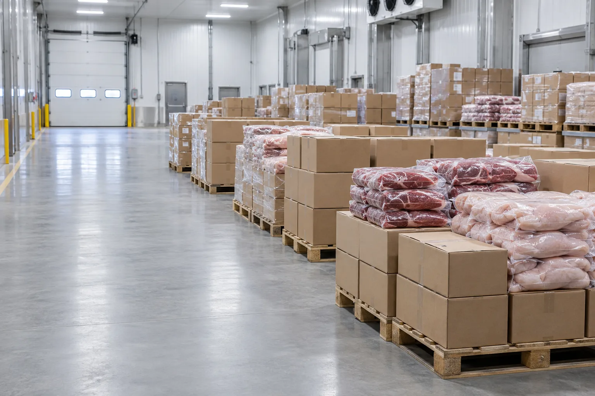
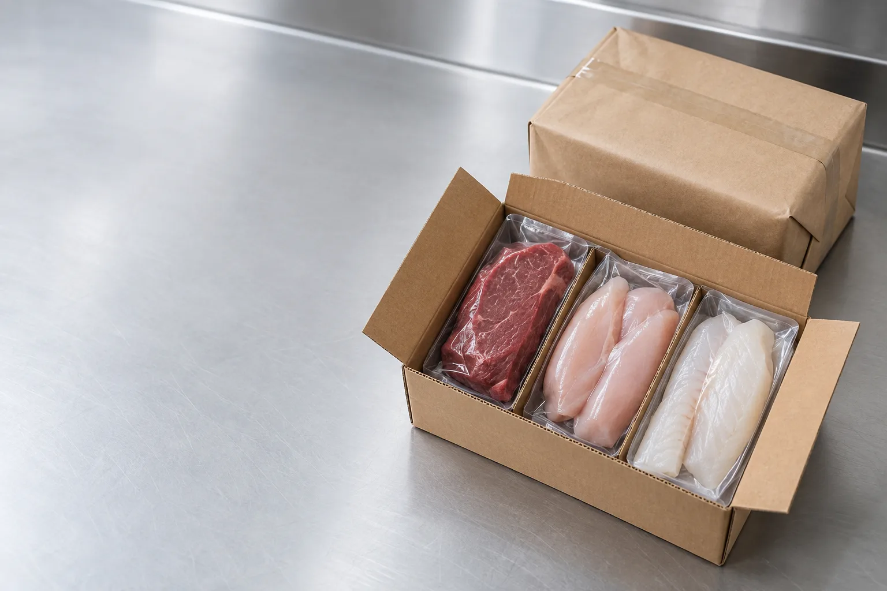

Мы на рынке с 2006 года
ООО «Торговый Дом Мясник» — надёжный поставщик мяса и рыбы. Наша миссия проста: обеспечить производителей вкусной еды качественными и недорогими мясом и рыбой.
Дистрибьютер, которому доверяют кухни края
Компания образована в 2006 году и много лет остаётся крупным дистрибьютером замороженных мясопродуктов и рыбы. Долгосрочные отношения с надёжными отечественными и зарубежными производителями и знание рынка позволили занять прочные позиции в Пермском крае.

Спокойствие тех, кто кормит людей
Наши клиенты — производители еды для сотен и тысяч граждан. Мы хотим, чтобы они были спокойны и уверены в нашей надёжности как поставщика, в качестве и безопасности продукции. Конечный потребитель должен получать здоровую, недорогую и вкусную пищу — на работе, учёбе, лечении и отдыхе.

Контроль качества
Более 200 контрагентов. Критерии отбора — надёжность, цена, качество и экологичность. Мясосырьё соответствует требованиям РФ, со всеми документами, сертификатами и декларациями.
Говядина
ТД «Горняк» (Ижевск), Казанский мясокомбинат
Свинина
ТД «Восточный», Кировский мясокомбинат
Курица
«Приосколье» (Белгород), «Челны-бройлер», «Ясные зори», ПРОДО (ПФ «Пермская»), «Важная птица» (Казань)
Обученный персонал
Сотрудники постоянно повышают квалификацию, чтобы понимать потребности клиентов.
Постоянство
Один менеджер и один водитель закреплены за клиентом на годы вперёд.
Своя логистика
Доставка на следующий рабочий день, в экстренных случаях — в день заказа.
Гибкая фасовка
Коробами и поштучно, деление коробки под нужный объём.
Начнём работать?
Оставьте контакт — пришлём прайс и ответим на вопросы в рабочее время.
Не хотите оставлять заявку и ждать?
Позвоните — примем заказ и назовём цены за 2 минуты.